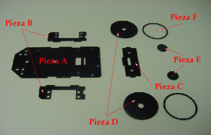
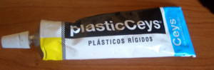
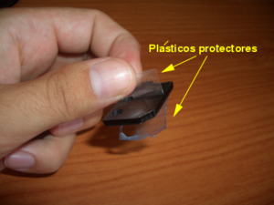
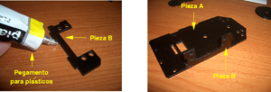
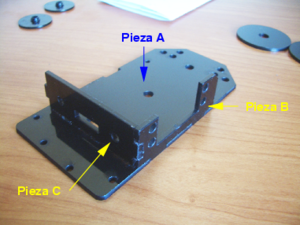
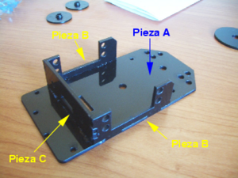
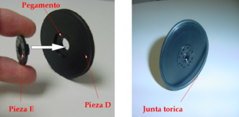
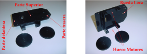

Descripción
{kind=link}

Piezas necesarias para el montaje del chásis del Skybot
Las piezas necesarias para montar el robot son:
- Pieza A: Base del robot
- Piezas B: Laterales, donde irán atornillados los servos
- Pieza C : Frontal. En ella se situarán los sensores de infrarrojos
- Piezas D: Ruedas.
- Piezas E: Coronas circulares pequeña de los servos Futaba 3003. Están colocadas en los motores. Se usarán más adelante
- Piezas F: Juntas tóricas para las ruedas.
Material adicional necesario
{kind=link}

Pegamento para plásticos rígidos
Para pegar las piezas del robot hay que utilizar pegamento. Puede ser de dos tipos:
- Pegamento para plásticos rígidos. Por ejemplo PlasticCeys. Tardan unas horas en que las piezas se peguen correctamente. No entrañan ningún tipo de riesgo su uso.
- Pegamentos de contacto. Como por ejemplo SuperGlue o Loctite.
{kind=link}
Montaje
- Paso 1: Quitar los plásticos protectores de ambas caras de las piezas. Las piezas son de metacrilato negro y están cortadas por láser. De la fábrica vienen con un plástico protector para evitar que se rayen. Están situados por ambas caras de cada pieza.
| 
Las piezas del robot vienen con unos plásticos protectores para evitar que se rayen |
{kind=link}
- Paso 2: Pegar uno de los laterales. Apoyar la pieza A (base del robot) sobre la mesa. Una de las dos superficies de la base es más brillante que otra. Es la que pondremos en contacto con la mesa (es la parte que luego más se verá cuando esté el robot construido). Usando el pegamento para plásticos rígidos, extenderlo por todas las superficies de contacto entre las piezas B y A, y unirlas como se muestra en la figura.
| 
Unión de las piezas A y B |
{kind=link}
- Paso 3: Pegar la parte frontal. Pegar la pieza C a la A y a la B, como se indica en la figura. Poner pegamento en todos los puntos de contacto entre las tres piezas.
| 
Unión de las piezas A, B y C
|
{kind=link}
- Paso 4: Pegar el otro lateral. Pegar la pieza B que falta, que está en contacto con la A y con la C. Con esto finaliza la primera parte de la construcción del chásis del robot. Dejar la estructura reposar al menos durante 2 horas para que el pegamento se seque y las piezas se vayan fijando.
| 
Unión de la otra pieza B con la A y C |
{kind=link}
- Paso 5: Construcción de las ruedas. Pegar las piezas E a las D. Poner pegamento por toda la superficie de contacto de la pieza E y unir ambas piezas, introduciendo el eje de la pieza E por el orificio central de D. Finalmente poner la junta tórica en la hendidura del canto de la rueda. En la foto de la derecha se puede ver el aspecto de las ruedas.
| 
Construcción de las ruedas |
{kind=link}
Resultado final
Este es el aspecto que tienen el chásis y las rudas. En la figura de la izquierda se muestra en su posición normal. Sobre la superfie se colocará la electrónica, en los laterales irán atornillados los servos y en la parte trasera se situará la rueda loca.
| 
Chásis del robot junto a las ruedas |
{kind=link}
Enlaces
- Taller Skybot. Página principal
- Sesión 1: Índice
Noticias
- 16/Junio/2008: Finalizada la migración (Juan González)
- 15/Junio/2008: Comenzada esta página. Migración de la documentación en HTML.